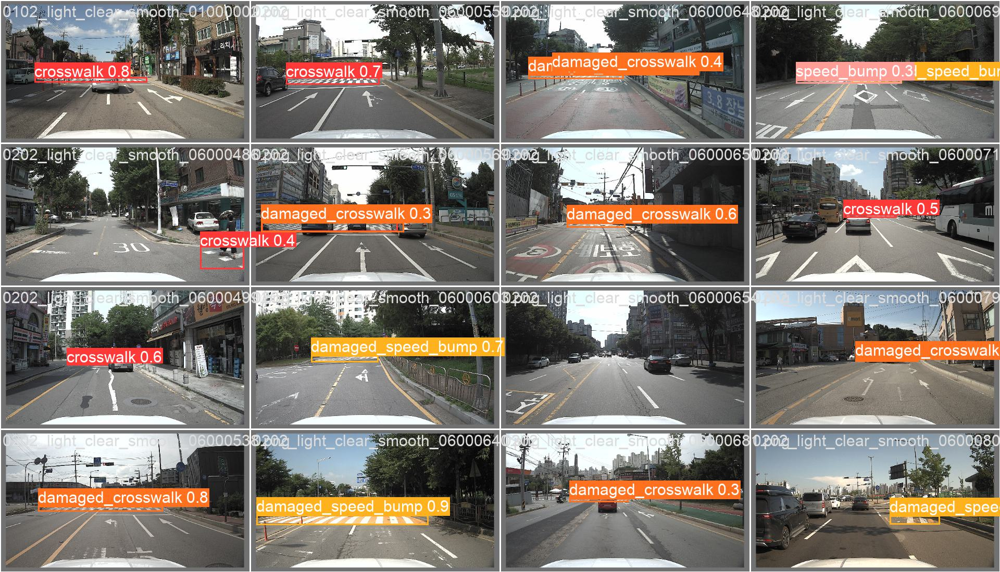
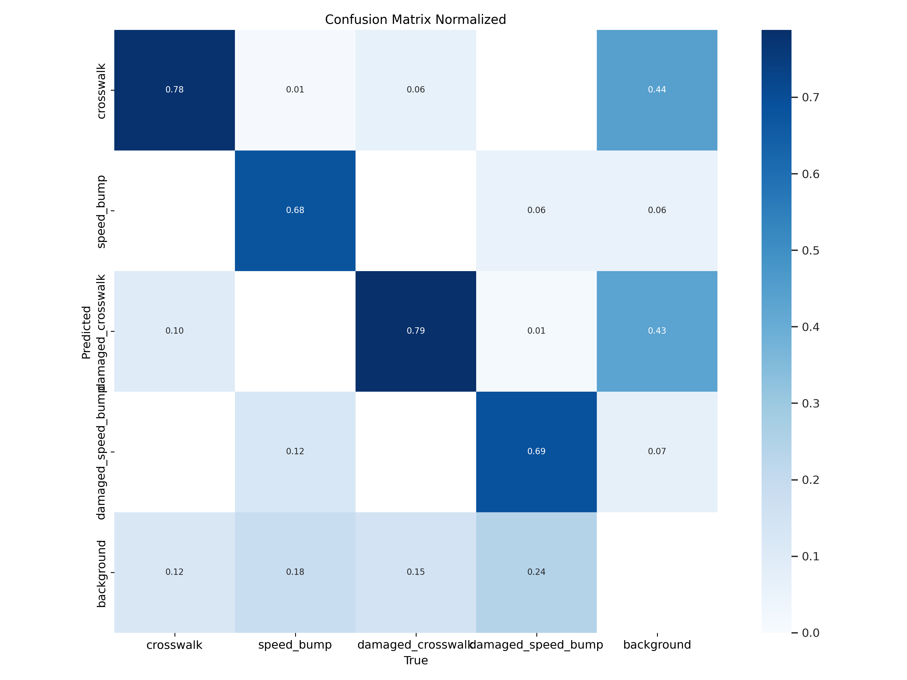
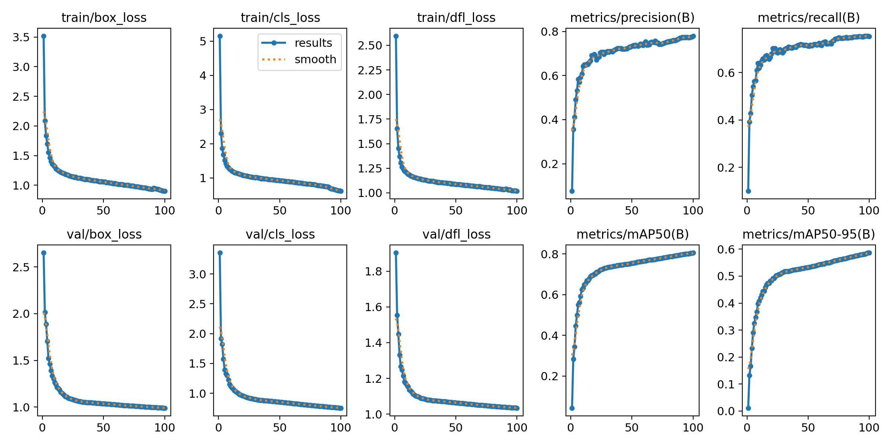

time = light) 데이터 28,000장만 학습에 사용 — 온전 10,000 · 훼손 18,000crosswalk · speed_bump · damaged_crosswalk · damaged_speed_bump0101·0102 / 훼손 0201·0202)로 구분해 정상·훼손 라벨을 자동 부여yolov8s · 100 epoch · imgsz 640 · batch 16 · 8×Tesla P100 서버

time = light 28,000장 선별

runs/detect/train2/results.csv(100 epoch) · args.yaml 학습 설정 · 라벨 전처리 노트북
github.com/Ori-Gui/yolodetect